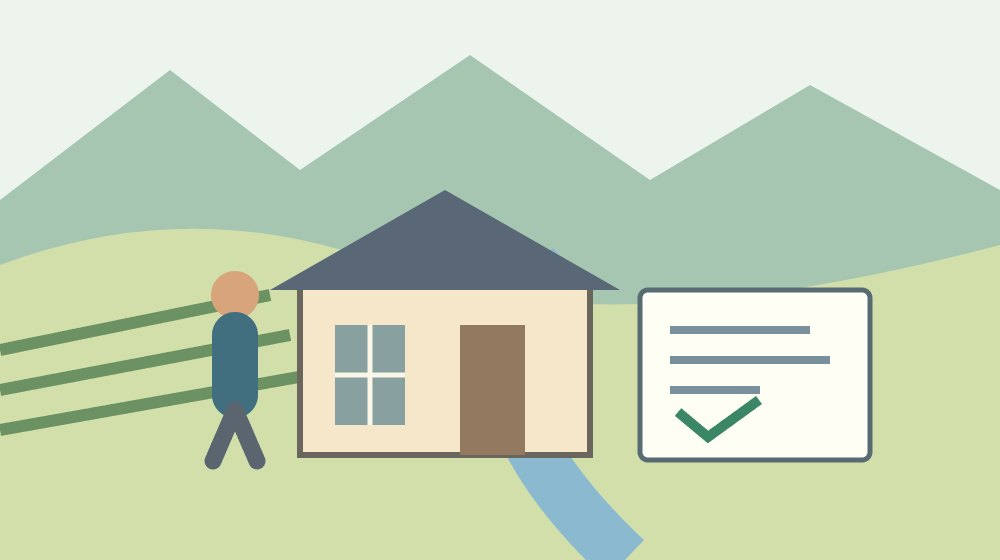
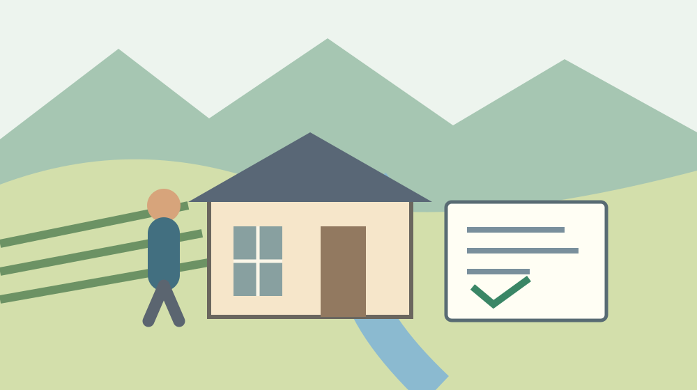
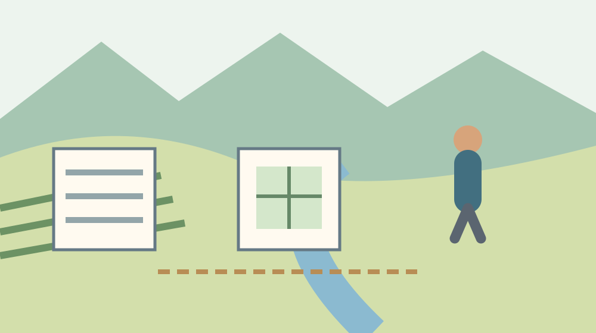

相続登記の免税｜森町の土地100万円以下

Q. 森町の実家の土地が100万円以下なら、相続登記は無料になる？
A. 課税標準となる不動産の価額が100万円以下の土地は、一定の相続登記等を2027年3月31日までに受けると登録免許税が免税になります。対象は土地の税で、建物の税、証明書取得費や司法書士報酬まで無料にはなりません。最初に土地の評価額を確認してください。
森町の実家を引き継ぐとき、費用を一つにしない
森町の実家を守るご家族は、草刈り、換気、郵便物の確認を続けています。町外から通う方には、移動と仕事の調整も重なります。相続登記の相談を始めるとき、税の話だけでその負担を軽く扱いたくありません。この記事は、必要な出費の内訳を整理するための案内です。
私は大石浩之（磐田市／不動産業）です。登記費用を考えるときは、まず税、書類、依頼する仕事を分けたいと考えます。免税という言葉から、相談にかかる費用までゼロだと受け取ると、家族の予算が合いません。今回使う判断は、家計と段取りから見る原則と、数字を負担に翻訳する原則です。
国税庁の土地の相続登記等に関するリーフレットを、2026年10月6日に確認しました。資料には令和8年4月の表示があります。この記事の対象は、土地の登録免許税の特例です。森町だけの独自制度ではなく、国の制度を森町の土地について検討する記事として読み進めてください。
実家の建物、庭の土地、離れた土地を、家族の言葉では全部「家」と呼ぶことがあります。相談用の記録では、それぞれを分ける必要があります。所在地だけでなく地番と名義を並べる作業は、売却を決めなくてもできます。費用の見通しを付ける前に、何の登記をするのかをそろえます。
事実整理｜100万円は売値ではなく登記の価額
国税庁のリーフレットは、課税標準となる不動産の価額が100万円以下の土地について、一定の相続による所有権移転登記等の登録免許税を免税としています。期限は2027年3月31日です。「100万円以下」には100万円ちょうども含まれます。建物全体の登記費用を無料にする説明ではありません。
国税庁は、固定資産課税台帳に登録された価格がある場合、その価格を不動産の価額とすると説明しています。登録された価格がない場合は、登記官が認定した価額です。その場合の問い合わせ先は不動産を管轄する登記所とされています。売りたい金額や不動産広告の価格で判定する仕組みではありません。
国税庁が対象として記す保存登記は、表題部所有者の相続人が受けるものに限られます。所有権移転登記も相続によるものです。登記の種類を飛ばして、低価格の土地は何でも免税になると説明することはできません。登記事項の状態と相続の経過を確認してから、当てはまる手続を確かめます。
国税庁の資料には、土地を相続した個人が移転登記前に死亡した場合の別の免税措置もあります。死亡した個人を登記名義人とするための登記が対象です。100万円以下の措置とは区別します。資料の図は、その後の相続人への移転が同じ措置の対象とはならないことも示しています。

森町で価額を確かめる｜資料名と年度をそろえる
森町の固定資産関係申請書ページには、評価証明書、評価通知書、公課証明書、名寄帳などの様式があります。用途が違う資料が並んでいるため、「登記に使う土地の価格を確認したい」と目的を伝えるのが出発点です。どの資料と年度が必要かは、登記を進める側と町の税務課へ確認してください。
森町の同ページは、郵便請求の申請書と案内も掲載しています。町外に住むご家族は、窓口へ行く前にその方法を確認できます。ただし、相続人が請求する場合の関係確認資料など、個別に必要なものをこの記事だけで確定しません。請求者の立場と所有者が亡くなったことを先に伝えると、問い合わせの焦点が合います。
森町の固定資産税全般のFAQと、登記の免税条件は別の資料です。固定資産税の扱いを確認しただけで、登録免許税も判断できるわけではありません。納税通知書を見つけたら、年度と土地の欄を確認し、登記に用いる価格と同じかを問い直します。税額の欄をそのまま100万円と比べないようにします。
私が提案する準備は、資料の表題を含めて写真に残すことです。数字だけを切り抜いた画像では、評価額なのか、課税標準額なのか、年税額なのかが分かりません。住所や氏名の写った画像は家族内でも共有先を絞ります。資料名、年度、地番、数字の欄名がそろえば、専門家へ質問を一つずつ渡せます。
家計に置き直す｜税と証明書と報酬の三つの箱
土地の相続登記の税と、登記を依頼するための報酬は別の支出です。国税庁のリーフレットが免税とするのは登録免許税です。証明書の取得、郵便、専門家への依頼にかかる金額は、同資料からは確定できません。見積書を受け取る際には、税の欄と、それ以外の費用の欄を分けて確認します。
国税庁の表には、土地の相続による所有権移転登記の本則税率として0.4％が示されています。仮に価額100万円の土地にこの率を単純に掛けると4,000円です。価額80万円なら3,200円です。これは税の規模を把握する計算例で、端数処理や個別事情を反映した請求額の確定ではありません。
私は、この数千円の違いも家族の出費として数えます。ただ、免税額が小さく見えるから登記を後回しにする、という順にはしたくありません。戸籍や名義の確認、家族間の話し合いには別の時間が必要です。免税の見込みは予算の一項目に入れ、手続全体の準備と分けて進めるほうが無理を減らせます。
見積書の税欄がゼロでも、報酬や実費が残れば支払総額はゼロではありません。私は家族用のメモに「土地の税」「建物の税」「書類・郵便」「依頼報酬」を別行で置くことを勧めます。依頼する範囲も横に書きます。合計だけを比較するより、誰がどの作業を引き受ける金額かを読み取りやすくなります。
良い点｜土地の負担を外し、相談の入口を作れる
土地の相続登記の免税措置には、対象となる税の負担を軽くする利点があります。国税庁が価格の考え方と期限を一枚に整理していることも、相談前の確認に役立ちます。土地の売値を決めていない家族でも、固定資産の資料から話を始められる点は、持ち主の判断を急がせない仕組みとして評価できます。
私は、対象になりそうな土地を一覧の中で見つけられることに意味を感じます。家の敷地だけを見ていたご家族が、離れた土地も整理するきっかけになります。ただし、複数の土地や持分のある登記でどのように判定するかは、登記内容に沿って確認します。家族で勝手に合算したり、分割したりして答えを出しません。
森町には固定資産関係の様式をまとめた公式ページがあります。私は、窓口で資料名を一から探す負担を減らせる点を評価します。ご家族がそれぞれ違う資料を頼む前に、同じページを共有できます。町外に住む子と町内に残る家族が、問い合わせ内容を合わせる小さな道具として使えます。
免税が分かれば、残る費用の相談へ進みやすくなります。私の意見では、節約できた分を何に使うかより、必要な実費を誰が立て替えるかまで決めるほうが先です。家族が一人で資料を集め続ける状態は、金額だけでは見えません。支出と担当を同じ表に置くと、手続の担い手の負担も話せます。
注文したい点｜期限と家屋の線引きを見落とさない
土地の免税条件を確認するとき、期限と対象の線引きが残ります。国税庁の資料は、2027年3月31日までに対象の登記を受ける場合と記しています。期限までに相談しただけでよいとは読み替えません。申請から登記までの進め方や必要な時期は、管轄登記所や司法書士に余裕を持って確認してください。
私は、説明の入口に「土地の税だけ」と大きく書いてほしいと考えます。実家という一つの言葉で相談が始まる以上、建物の登記も含めて無料と思う余地があるからです。ご家族の今日の一歩は、課税明細の土地欄と家屋欄を別々に印を付けることです。印を付けても、免税の適用が確定するわけではありません。
固定資産の価格がない土地について、私はこの記事だけで相談の難しさを見通せません。登記官の認定価額を確認する必要があるという国税庁の案内までが、確かめた事実です。値段が分からないからゼロと置くのは避けます。地番と登記資料を手元に置き、どの価額を使うのかを登記所へ問い合わせる段取りにします。
相続の経過が複数にわたるご家族は、死亡した人への登記に関する別の免税も気になるはずです。私は、低価格の免税と同じ欄に混ぜないことを提案します。亡くなった順と現在の登記名義を紙に並べ、どの登記にどの特例を検討するのかを尋ねます。家族の系図だけで適用を言い切らず、専門家の確認を待ちます。

対案・結論｜今日するのは土地の評価額の確認
森町の相続登記費用を整理するため、今日できる一歩は、土地の評価額が載る資料を探すことです。手元になければ、地番と所有者の名前を控え、森町の固定資産関係申請書ページで確認方法を調べます。いきなり全書類を注文する必要はありません。まず資料名と必要年度を確かめる一件の問い合わせから始めます。
土地の漏れが心配なら、名寄帳で実家の筆を並べる記事を先に使えます。名寄帳を取ることと、今回の登記に必要な価額を確定することは別の作業です。一覧を作った後に、相談先へ必要な資料を確認します。敷地だけを見て安心せず、離れた土地も質問に含めます。
相続人申告登記と通常の相続登記を混同しそうな場合は、二つの手続の違いを整理した記事も参照してください。どの手続を選ぶかと、土地の登録免許税の免税を受けられるかは、質問を分けて渡します。手続名が違えば、準備する確認も変わるためです。
実家の片付けを同時に進めるご家族は、実家を片付ける前の整理も使えます。私は、書類を探す日と家財を運び出す日を分ける案を出します。登記に関係しそうな封筒を捨てずにまとめ、写真を撮ってから判断します。登記相談を始めることは、家を売ることの約束ではありません。
家族に残す記録｜相談をやり直さないための一枚
相続登記の相談用メモには、地番、登記名義、固定資産資料の年度、土地の価格を載せる欄を作ります。建物の情報は別行にします。数字の横には、その数字を見た資料名も添えます。これが私の提案する一枚の形です。誤って写した場合に、どこを見直せばよいかが家族にも分かります。
資料を集める担当と登記所へ質問する担当が別なら、引き渡す日にちも残します。返事を受けた人は、確認日、相談先、まだ答えが出ていない項目を記録します。「免税らしい」という口頭の連絡だけでは、土地の範囲と条件が抜けます。相談後の回答と、家族の推測を別の欄に置いておくと整理しやすくなります。
個人情報のある資料を親族全員へ無差別に送る必要はありません。私は、原本の保管場所を決め、相談担当が必要な範囲を共有する形を勧めます。土地の一覧に登記識別情報などの秘密の情報を混ぜないことも、記録を作る側の配慮です。資料をどこまで渡すかは、依頼先の案内に沿って判断します。
土地が農地か、道路にどう接しているか、境界が確認できているかは、登記費用とは別の判断材料です。免税が分かったから、貸せる、売れる、建てられるとは限りません。私は、費用の確認が済んだ項目だけを完了とし、利用の相談は別に残します。家族の記録を一度に全部解決しようとしないほうが続けられます。
大石の視点｜無料という言葉より、残る仕事を見る
土地の相続登記で私が見たいのは、免税のあとに何の仕事が残るかです。私は、家計と段取りを先に考えます。土地の登録免許税が免除されても、名義を確認し、必要資料をそろえ、依頼の範囲を決める人が要ります。町の家を維持してきた方に、その仕事まで当然のように背負わせたくありません。
私はこう考えます。家族で机を囲むなら、まず紙を四つに分けます。土地の税、建物の税、書類の実費、頼む仕事の報酬です。一つの合計額だけを見て高い安いを決める前に、何が免税で何が残るのかを確かめます。これは実際の相談場面の再現ではなく、私が提案する考え方です。数字を作業へ戻して見ると、家族が次に尋ねる言葉も具体的になります。
私は、免税の期限に合わせて何でも急げばよいとは思っていません。相続の事情が複雑なら、費用の節約だけでは順番を決められません。ただ、価額が分からないまま何か月も置く状態は減らせます。今日は資料名と年度を確かめる。次に専門家へ手続と費用を聞く。この二段階なら、まだ処分を決めない家族も動けます。
森町の実家には、土地と建物だけでなく、守ってきた人の時間があります。私は、その時間を値段だけに換算したくありません。家をどうするかを決める前でも、登記の費用が一つ明らかになれば話し合いの材料が増えます。この記事の結論は、100万円の線を自己判断するより、土地の価額と残る費用を分けて確認することです。
よくある質問
土地が100万円なら家も含めて登記無料ですか？
無料になるのは、条件を満たす土地の登録免許税です。建物の税、戸籍や証明書などの取得費、司法書士報酬は別に確認します。100万円は売値ではなく、登記の課税標準となる不動産の価額です。土地と家屋を分けて資料を用意し、見積書では免税部分と残る費用を別々に説明してもらってください。
評価額は森町のどこで確認しますか？
森町の税務課の固定資産関係申請書ページに、評価証明書、評価通知書、名寄帳などの様式があります。登記の用途、地番、所有者、請求者が相続人であることを伝え、必要な年度と書類を確認してください。課税台帳に価格がない場合は、国税庁の案内どおり、不動産を管轄する登記所へ価額を確認します。
2027年3月31日までに相談すれば間に合いますか？
国税庁の資料は2027年3月31日までに対象の登記を受ける場合としています。相談だけで期限の条件を満たすとは扱いません。必要資料や相続の経過によって準備も異なります。期限直前の相談を前提にせず、管轄登記所や司法書士に進め方を確認してください。将来の延長を見込んだ説明もしていません。
参考にした公式情報
- 国税庁：土地の相続登記等の登録免許税の免税措置（令和8年4月版）（2026年10月確認／確認日：2026年10月6日）
- 森町：固定資産関係の証明・閲覧申請書（2026年10月確認／確認日：2026年10月6日）
- 森町：よくあるご質問〈固定資産税全般〉（2026年10月確認／確認日：2026年10月6日）
最終確認日：2026-10-06。制度・数値・料金は変わる場合があります。税務・登記・契約・裁判手続の個別判断は、管轄窓口、司法書士、税理士、弁護士等へ確認してください。この記事は公表情報と大石の意見を段落単位で分けています。